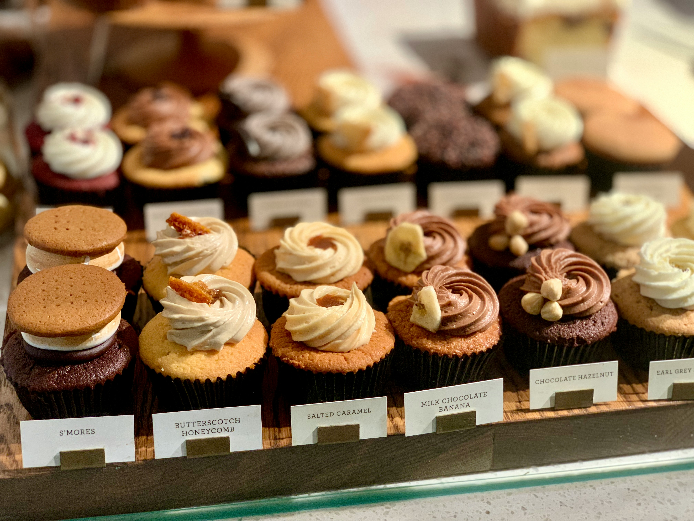

カフェの魅力
カフェHIBIKIは、恵比寿の静かな路地裏に佇む隠れ家カフェです。
自家焙煎コーヒーはもちろん、無添加スイーツや季節のブランチメニューを厳選素材でご用意。
あなたの時間をゆったり満たすための空間づくりにこだわっています。

自家焙煎コーヒー
豆の産地や焙煎度合いにこだわり、一杯ずつ丁寧にハンドドリップ。
豊かな香りと深い味わいをお楽しみください。

無添加スイーツ
添加物を極力使わず、素材の甘みを生かしたスイーツを提供。
カラダにもやさしく、見た目も可愛い一品です。

落ち着いた内装
木を基調としたインテリアと心地よい照明。
静かなBGMが流れる店内で、ゆったりとした時間をお過ごしください。